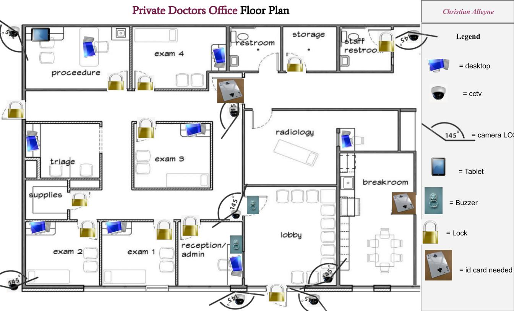

I have been working different projects ever science coning to the brooklyn steam center, mostly working with computers in both programming and cyber security which were fun with one of these projects being this respository.
This project is one I did during a cyber security class of a map of a private doctor's offace where I had to find spots for any devices or ways of hardening (ways of securing something) like cameras, locks, ID cards, desktops, tablets, and buzzers.